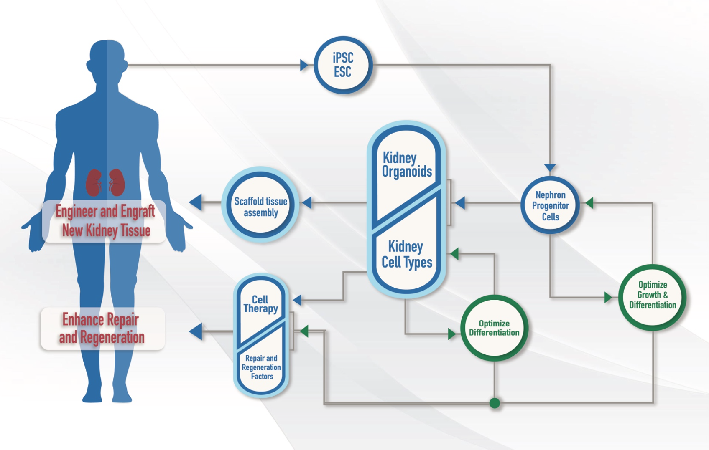

<div class="home">
  <div class="home-main">
    <div class="container content-inner">
      <h1 id="home-head">Welcome to the RBK Consortium</h1>
      <p class="lead" id="intro">(Re)Building a Kidney (RBK) is an NIDDK-funded consortium of research projects working to optimize approaches for the isolation, expansion, and differentiation of appropriate kidney cell types and their integration into complex structures that replicate human kidney function for the purpose of kidney regeneration and repair. The ATLAS-D2K Data Repository houses curated data and tools generated by the RBK consortium. All data and tools in the repository are searchable and accessible via web-based interfaces, REST APIs, and program libraries. <a href="{{ "/rebuildingakidney/about/" | relative_url }}">Learn more about RBK here</a>.</p>

      <figure>
        <a href="assets/img/rbk_figure_overview.png">
          
        </a>
      </figure>
      <p class="text-center"><em>Diagram representing the goals of the RBK Consortium</em></p>

    <div class="container content-inner features section-blurb">
      <div class="row" id="opps">

        <div class="col-md-6">
          <h3>Recent Publications</h3>
          <ul class="posts">
            <li><a href="https://doi.org/10.1152/ajpcell.00288.2022">Functional maturation of kidney organoid tubules: PIEZO1-mediated Ca2+ signaling</a> <small><em>(American Physiological Society - Cell Physiology, 2023)</em></small></li>
            <li><a href="https://doi.org/10.1681/asn.0000000000000057">Lineage Tracing and Single-Nucleus Multiomics Reveal Novel Features of Adaptive and Maladaptive Repair after Acute Kidney Injury</a> <small><em>(JASN, 2023)</em></small></li>
            <li><a href="https://doi.org/10.1016/B978-0-12-823318-4.00037-8">Chapter 18 - Stress-induced senescence of tubular cells</a> <small><em>(Regenerative Nephrology, 2022)</em></small></li>
            <li><a href="{{ "/chaise/recordset/#2/Common:Publication/*::facets::N4IghgdgJiBcDaoDOB7ArgJwMYFM6JHQBcAjdafEAYRQFtaUIQAaEABTRIBsBLLMIj0YB9GhFQZBaWsIBmAaxwBPEAF0AvqwBKASQAia1lgAWKPjiSUAigFoAzAGkArABY16jUA@sort(Year::desc::,Month::desc::,RID::desc::)" | relative_url }}">more RBK publications ></a></li>
          </ul>
        </div>
        <div class="col-md-6">
          <h3>Latest News</h3>
          <ul class="posts">
          {% assign counter = 0 %}
          {% for post in site.posts %}
            {% if post.tags contains 'rbk' %}
              {% assign counter = counter | plus: 1 %}
              <li>
                <a href="{{ post.url }}">{{ post.title }}</a><br/>
                <time>
                  {{ post.date | date: "%m/%d/%Y" }}
                </time>
              </li>
              {% if counter == 3 %}
                {% break %}
              {% endif %}
            {% endif %}
          {% endfor %}
          </ul>

        <a id="more-news" href="{{ "/rebuildingakidney/news/" | relative_url }}">more RBK news ></a><br>
        <!--    <a href="{{ "/publications/" | relative_url }}">publications ></a> -->


        </div>
      </div>
    </div>
</div>
